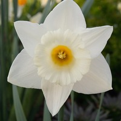

|  |
Нарци́сс (лат. Narcissus) — род однодольных растений из семейства амариллисовых.
Как и у многих других растений этого семейства, цветки у нарцисса имеют сильный дурманяще-сладкий запах. Именно поэтому слово «нарцисс» имеет тот же корень, что и слово наркоз.
С древности эфирное нарциссовое масло применялось в парфюмерии, его упоминает уже Диоскорид. Из-за появления дешёвых синтетических ароматизаторов с близким запахом, в настоящее время оно практически не используется. |